|
||
|
|
||
|
Artigos / libtas_ (libTAS) Last Update: 09/11/2024 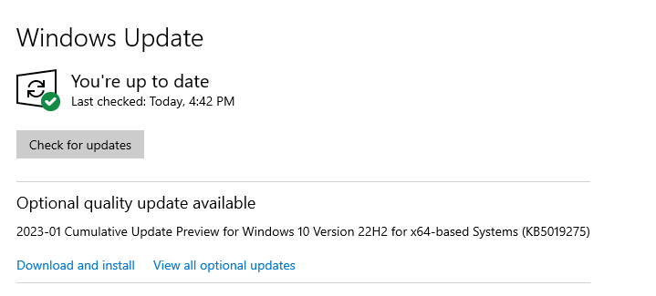 Configurações/Atualização e Segurança/Para Desenvolvedores marque a opção Modo de Desenvolvedor. 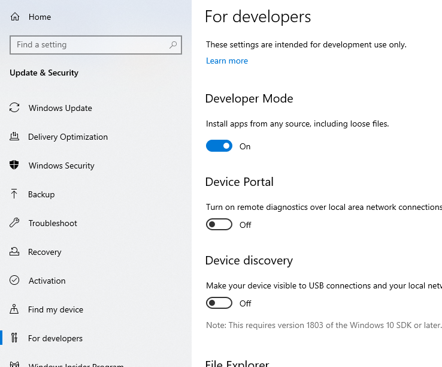 Configurações/Aplicativos/Aplicativos e Recursos/Programas e Recursos/Ativas ou Desativas Recursos do Windows e marque as opções Subsistema do Windows para Linux e Area Restrita do Windows. 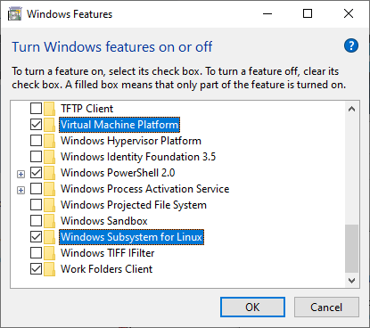 Restart Para confirmar que está tudo certo abra o PowerShell do Windows e digite bash.exe. 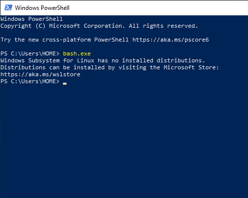 Esta tudo OK, agora falta uma distribuição, mas antes vamos ter certeza que a versão do WSL é a 2. No CMD/Prompt de Comando digite:
wsl --set-default-version 2For information on key differences with WSL 2 please visit https://aka.ms/wsl2Agora faça o Download do Kernel Update aqui: https://learn.microsoft.com/en-us/windows/wsl/install-manual#step-4---download-the-linux-kernel-update-package Link Direto: https://wslstorestorage.blob.core.windows.net/wslblob/wsl_update_x64.msi OK! Vamos para a distribuição, na propria Windows Store procure pela ultima versão do Ubuntu. 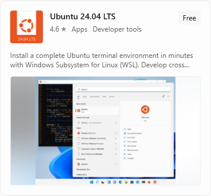 24.04 LTS (18/06) Depois do Download, abra o Software e aguarde as configurações. Crie um USUARIO e SENHA, lembre-se da senha. 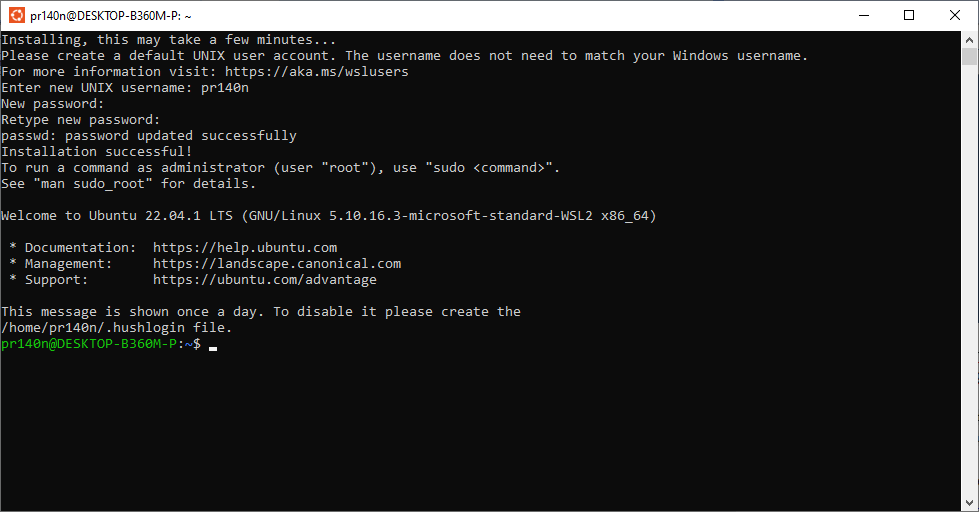 Para ter certeza que está tudo OK, de volta ao CMD, verifique a versão do WSL, digite:
wsl -l -v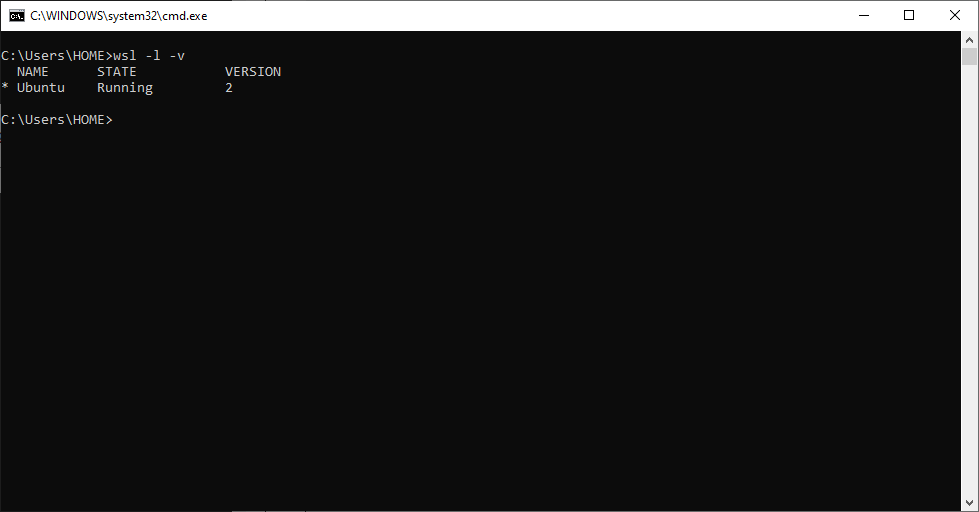 Tudo certo! Agora voce tem o Linux/Ubuntu rodando no Windows 10 WSL2, todos os arquivos que voce quiser colocar dentro do Linux, devem ser copiados para \\wsl.localhost\Ubuntu\home\<USER>\ 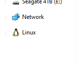 libTAS Antes de tudo, dentro do Linux é hora de procurar por Updates, digite: sudo apt update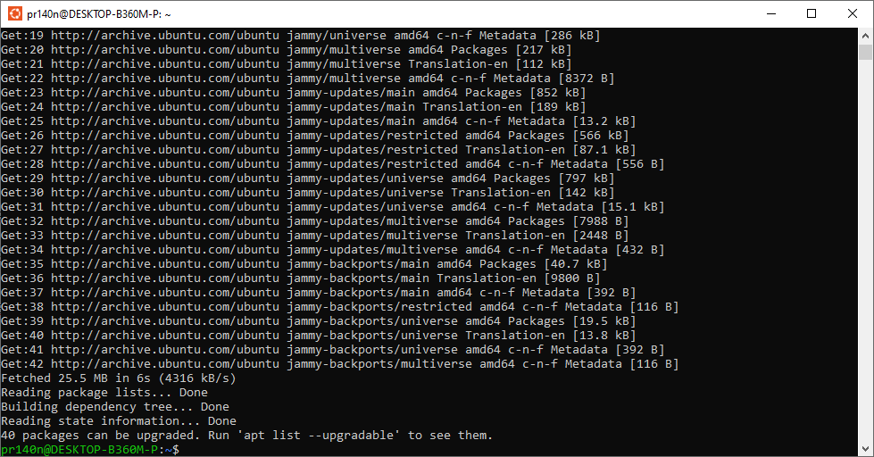 Em seguida: sudo apt upgrade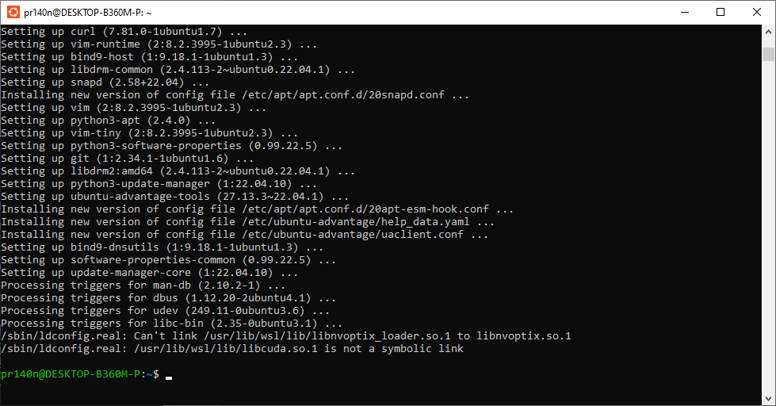 Confirme quando necessário e aguarde a instalação. Agora vamos instalar o libTAS. Download: https://github.com/clementgallet/libTAS/releases Coloque o libtas_1.4.4_amd64.deb dentro da pasta <USER> e digite: sudo apt install ./libtas_1.4.4_amd64.debCaso voce encontre QUALQUER erro digite: sudo apt --fix-broken installAgora vamos instalar o VcXsrv, que nos permitirá executar aplicativos com uma interface de usuário. Download: https://sourceforge.net/projects/vcxsrv/ Configurações: 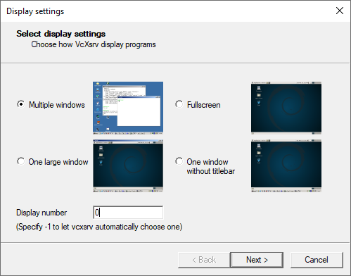 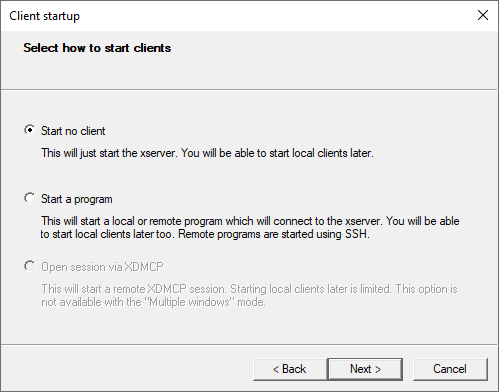 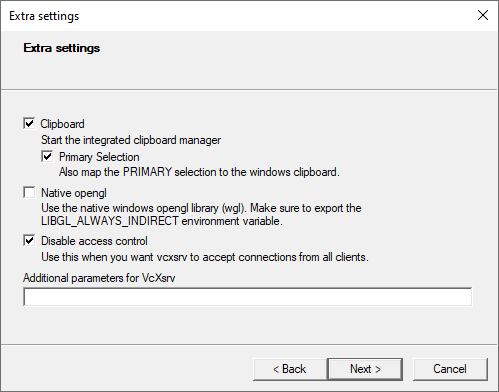 Na ultima tela, salve as configurações. Para iniciar o Software novamente com tudo pronto, ultilize o config.xlaunch salvo. 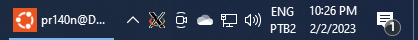 Tudo pronto, vamos conectar o WSL ao servidor. No Linux digite: export DISPLAY=$(awk '/nameserver / {print $2; exit}' /etc/resolv.conf 2>/dev/null):0É preciso conectar o WSL ao VcXsrv toda a vez que iniciar o Linux. Em seguida: libTASCase Sensitive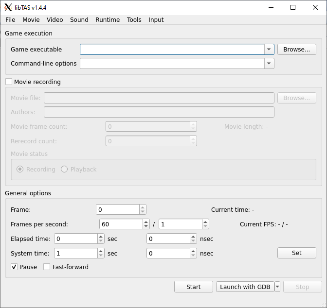 Não consegue ver o libTAS? O FireWall do Windows está bloqueando ele. 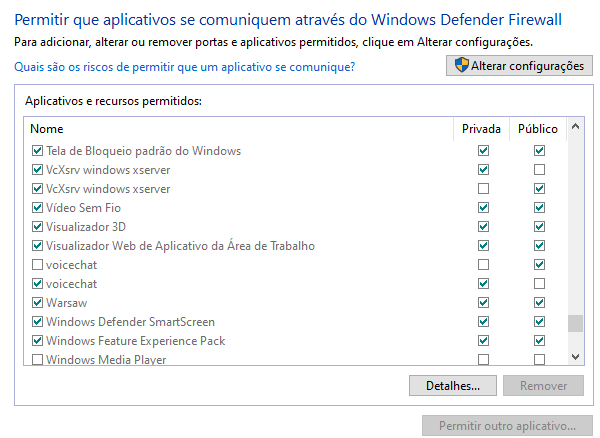 XDG_RUNTIME_DIR is invalid or not set in the environment? 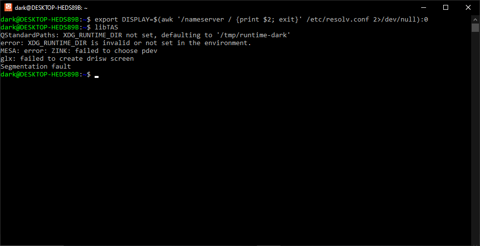 No Prompt de Comando do Windows: wsl.exe --status
em seguida wsl.exe
--update.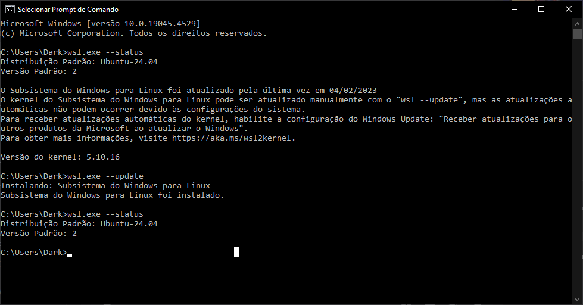 MAME Download Linux Compilado 0.272, 30/11/2024: https://github.com/spluto-dot/mame/actions/runs/12101303287 https://github.com/mamedev/mame Command-Line Interface do MAME que tambem serão usados no libTAS: -window: Windows Mode -nokeepaspect: 4:3 -skip_gameinfo: Pula o display das informações sobre o jogo Driver, CPU... -nomaximize: Nao "maximiza" na vertical -nonveram_save: Nao salva nenhuma alteração da BIOS/Service -resolution0 1280x1024: Resolução personalizada Antes de abrir o MAME no libTAS é preciso configurar tudo dentro do jogo antes, como o controle por exemplo, vamos usar como exemplo Street Fighter II, sf2.zip. ./mame sf2.zip -window -nomaximize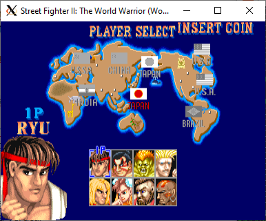 WSL NÃO tem suporte para som, vai ter som quando libTAS gerar o .mkv. libTAS, Game Executable: <CAMINHO>/mameCommand-line options:
sf2.zip -window -nokeepaspect -skip_gameinfo -nomaximize -nonvram_saveNo MAME é importante definir os frames para garantir sync, dentro do MAME, System Information: 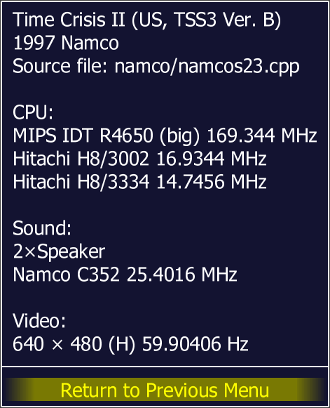 https://tasvideos.org/EmulatorResources/MAME#Framerate Time Crisis II roda a 59.90406, entao o que voce vai fazer no libTAS é vai adicionar esse Script* no Command-line options:
-script <CAMINHO>/mame-framerate.lua,
feche o Emulador e ele vai lhe apresentar os valores:* - https://tasvideos.org/UserFiles/Info/638183669502074999 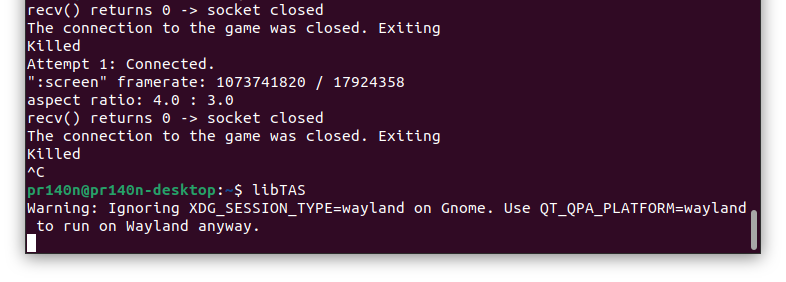 Em seguida no Frames per second: do libTAS: 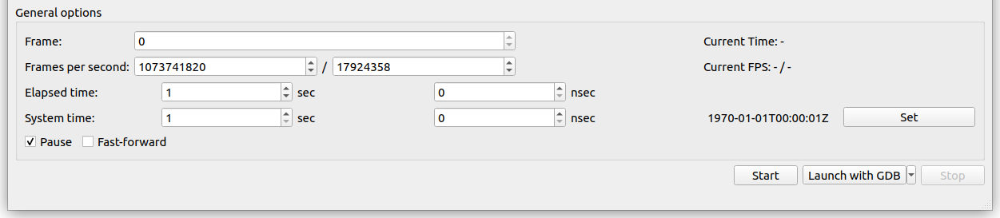 Numerator/Denominator 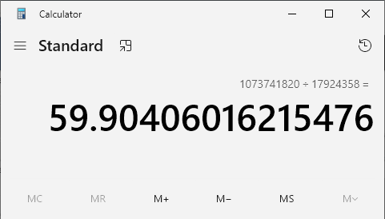 HBMAME sudo
apt-get install git build-essential python3 libsdl2-dev libsdl2-ttf-dev
libfontconfig-dev libpulse-dev qtbase5-dev qtbase5-dev-tools qtchooser
qt5-qmakeDownload: https://github.com/Robbbert/hbmame 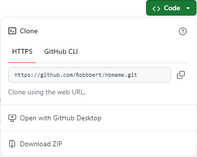 Na pasta raiz, hbmame-master:
make TARGET=hbmame PTR64=1Supermodel Download Linux Compilado 0.3a-git-4e7356a, 08/11/2024: https://github.com/spluto-dot/Supermodel/actions/runs/11751914567 https://github.com/trzy/Supermodel Obs: Não Funciona no WSL2 Flycast Dojo Download: https://github.com/blueminder/flycast-dojo flycast-dojo-x86_64.AppImage Extrair o flycast-dojo-x86_64.AppImage: chmod +x
./flycast-dojo-x86_64.AppImage
para conceder as permissões e logo em seguinda:
./flycast-dojo-x86_64.AppImage --appimage-extract.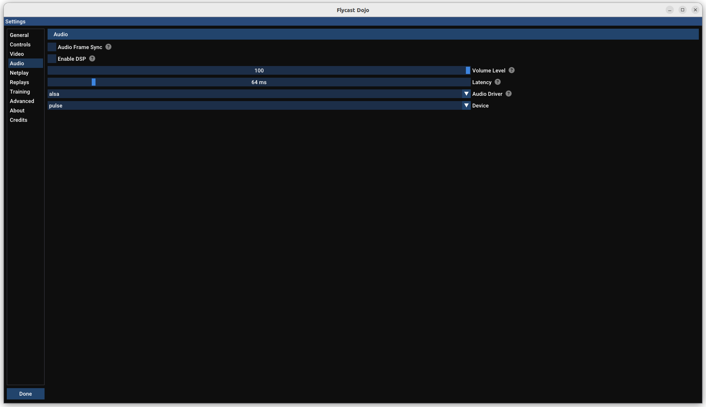 .config/flycast-dojo/emu.cfg rend.FixedFrequency = 1 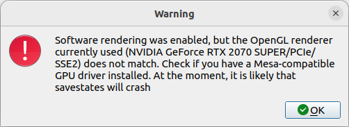 Desabilite os Drivers da NVIDIA. 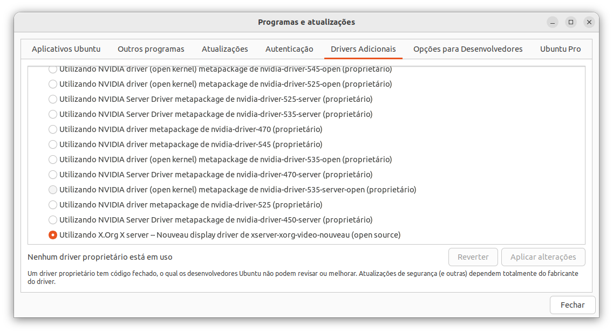 |
||
|
|
||